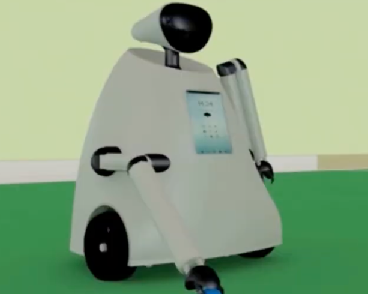

Projects
Building systems at scale and pushing research boundaries
Large-Scale Online Recommendation & Distribution Platform
Oct 2024 – Present
Architect and maintain the recommendation carousel system powering Prime Video’s genre customer experience across millions of users globally. Built a universal recommendation engine that unifies content ranking, retrieval, and personalization into a single distribution platform serving real-time inference at scale.

Kubrick: Multimodal Agent Collaborations for Synthetic Video Generation
Baidu Research Institute · Aug 2024
Pioneered the first multimodal VLM agent video generation pipeline. Multiple LLM/VLM agents collaborate as Director, Animator, and Compositor; decomposing natural language scripts into 3D scene graphs, generating Blender API, and rendering physically-grounded synthetic videos without manual CGI intervention.

Autonomous Cement Truck — Planning, Control & Perception
Construction Engineering Corp. LTD · 2024
End-to-end autonomous cement truck deployment on Baidu’s Apollo platform. Customized the full-stack: perception (LiDAR + camera fusion), planning (hybrid A* + lattice), control (MPC-based trajectory tracking), and calibration modules. Validated driving data across open-road and closed-loop scenarios.

Undergraduate Mechanical Product Design
Two product design video demos
A small collection of undergraduate mechanical product design projects covering assistive robotics and self-service product concepts, with emphasis on concept development, mechanical structure design, prototyping, and final presentation.